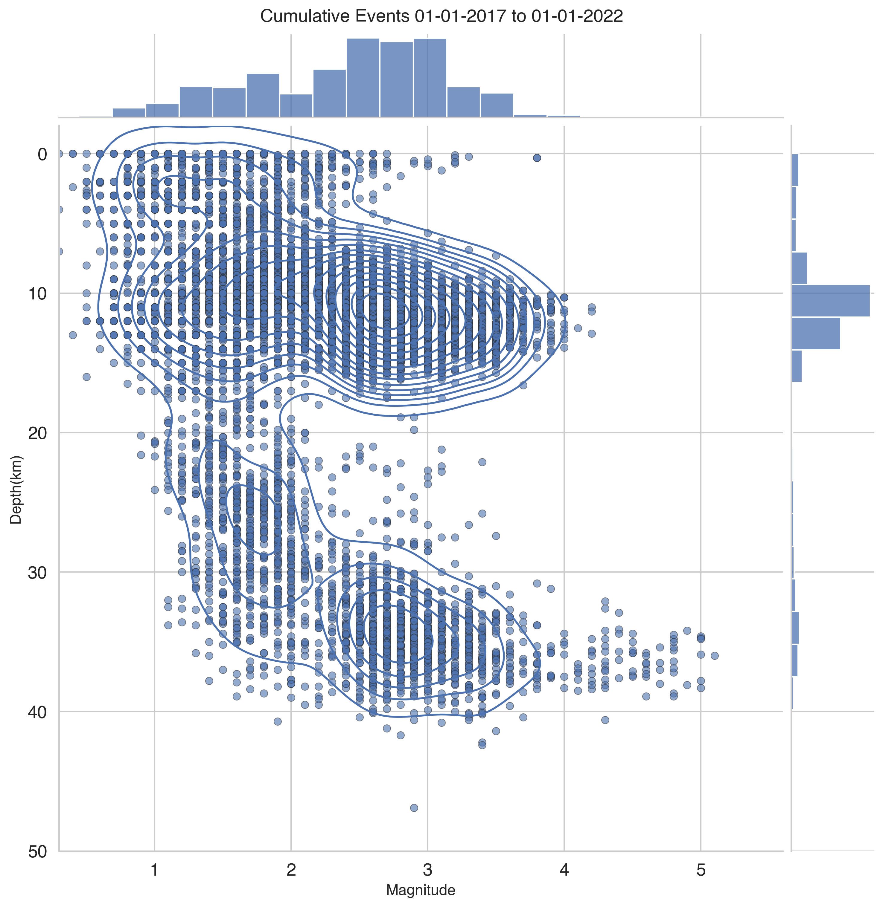
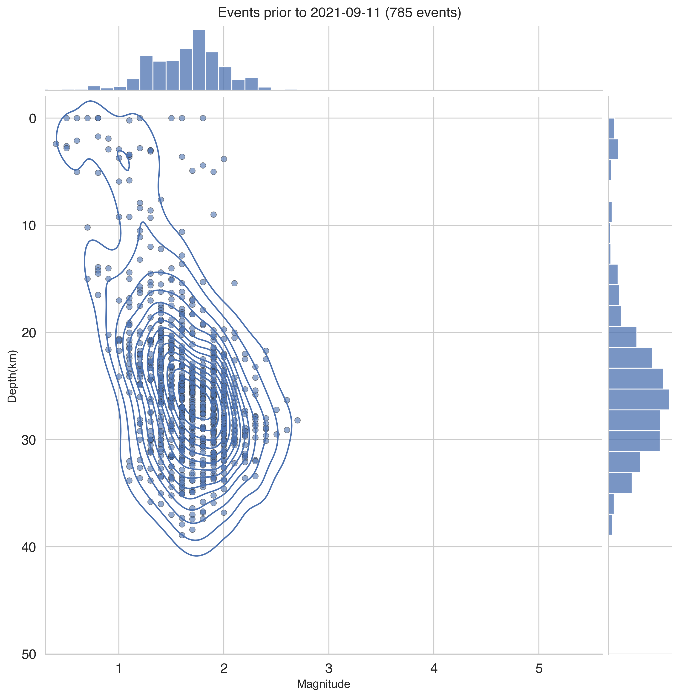
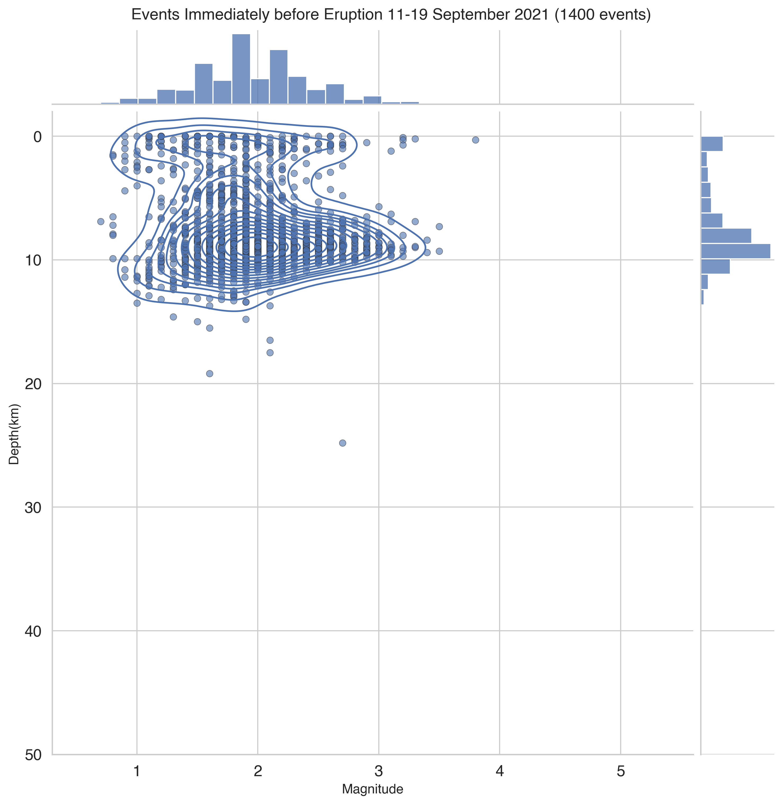
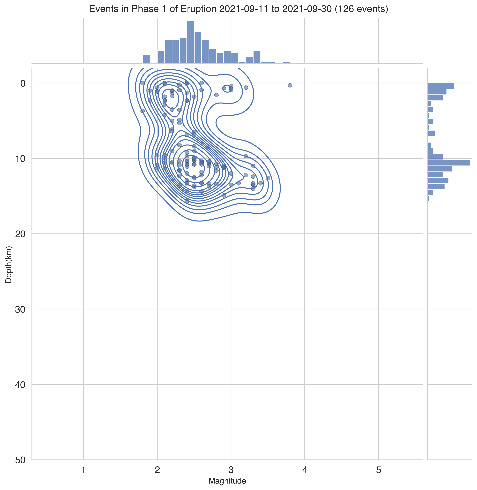
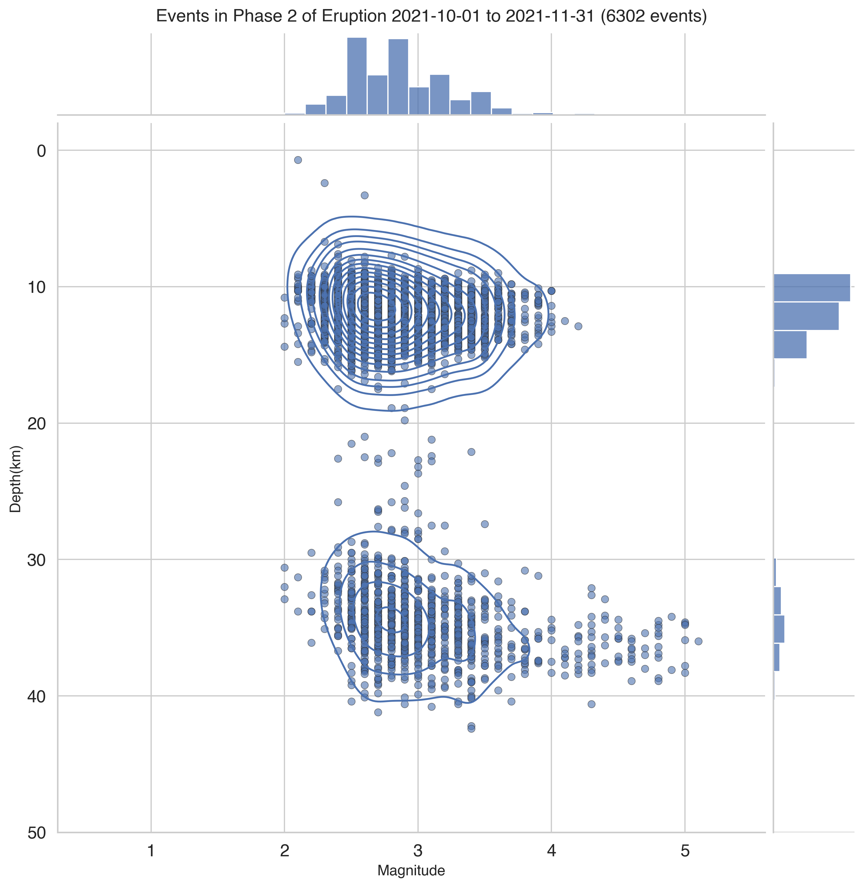
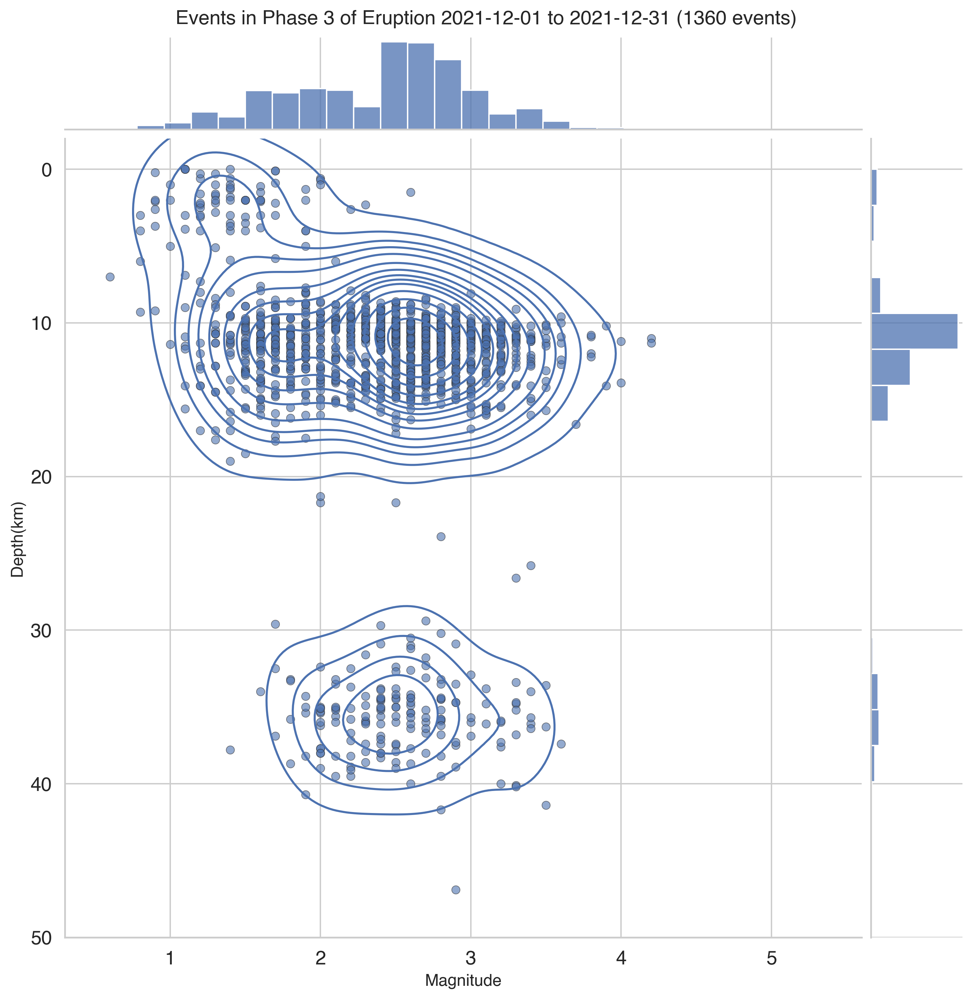

%matplotlib inline
import pandas as pd
import matplotlib
import matplotlib.pyplot as plt
import seaborn as sns
import numpy as np
sns.set_theme(style="whitegrid")Visualization & Figure Creation
Creating static figures using Seaborn
Steve Purves ![]()
Main Timeline Figure
In [1]:
In [2]:
def make_category_columns(df):
df['Depth'] = 'Shallow (<18km)'
df.loc[(df['Depth(km)'] >= 18) & (df['Depth(km)'] <= 28), 'Depth'] = 'Interchange (18km>x>28km)'
df.loc[df['Depth(km)'] >= 28, 'Depth'] = 'Deep (>28km)'
df['Mag'] = 0
df.loc[(df['Magnitude'] >= 1) & (df['Magnitude'] <= 2), 'Mag'] = 1
df.loc[(df['Magnitude'] >= 2) & (df['Magnitude'] <= 3), 'Mag'] = 2
df.loc[(df['Magnitude'] >= 3) & (df['Magnitude'] <= 4), 'Mag'] = 3
df.loc[(df['Magnitude'] >= 4) & (df['Magnitude'] <= 5), 'Mag'] = 4
return dfVisualising Long term earthquake data
Data taken directly from the IGN Catalog and processed using the data screening notebook.
In [3]:
df_ign = pd.read_csv('../data/lapalma_ign.csv')
df_ign = make_category_columns(df_ign)
df_ign.head()| Event | Date | Time | Latitude | Longitude | Depth(km) | Intensity | Magnitude | Type Mag | Location | DateTime | Timestamp | Swarm | Phase | Depth | Mag | |
|---|---|---|---|---|---|---|---|---|---|---|---|---|---|---|---|---|
| 0 | es2017eugju | 2017-03-09 | 23:44:06 | 28.5346 | -17.8349 | 26.0 | 1.6 | 4 | NE FUENCALIENTE DE LA PALMA.IL | 2017-03-09 23:44:06 | 1489103046000000000 | 0.0 | 0 | Interchange (18km>x>28km) | 1 | |
| 1 | es2017euhlh | 2017-03-10 | 00:16:10 | 28.5491 | -17.8459 | 27.0 | 2.0 | 4 | N FUENCALIENTE DE LA PALMA.ILP | 2017-03-10 00:16:10 | 1489104970000000000 | 0.0 | 0 | Interchange (18km>x>28km) | 2 | |
| 2 | es2017cpaoh | 2017-03-10 | 00:16:11 | 28.5008 | -17.8863 | 20.0 | 2.1 | 4 | W LOS CANARIOS.ILP | 2017-03-10 00:16:11 | 1489104971000000000 | 0.0 | 0 | Interchange (18km>x>28km) | 2 | |
| 3 | es2017eunnk | 2017-03-10 | 03:20:26 | 28.5204 | -17.8657 | 30.0 | 1.6 | 4 | NW FUENCALIENTE DE LA PALMA.IL | 2017-03-10 03:20:26 | 1489116026000000000 | 0.0 | 0 | Deep (>28km) | 1 | |
| 4 | es2017kajei | 2017-08-21 | 02:06:55 | 28.5985 | -17.7156 | 0.0 | 1.6 | 4 | E EL PUEBLO.ILP | 2017-08-21 02:06:55 | 1503281215000000000 | 0.0 | 0 | Shallow (<18km) | 1 |
In [4]:
df_ign['DateTime'] = pd.to_datetime(df_ign['Date'] + ' ' + df_ign['Time'])
df_ign['DateTime']0 2017-03-09 23:44:06
1 2017-03-10 00:16:10
2 2017-03-10 00:16:11
3 2017-03-10 03:20:26
4 2017-08-21 02:06:55
...
11342 2022-09-14 00:20:51
11343 2022-09-14 01:40:30
11344 2022-09-14 01:44:52
11345 2022-09-14 02:03:08
11346 2022-09-14 03:58:59
Name: DateTime, Length: 11347, dtype: datetime64[ns]In [5]:
df_ign_early = df_ign[df_ign['DateTime'] < '2021-09-11']
df_ign_pre = df_ign[(df_ign['DateTime'] >= '2021-09-11')&(df_ign['DateTime'] < '2021-09-19 14:13:00')]
df_ign_phase1 = df_ign[(df_ign['DateTime'] >= '2021-09-19 14:13:00')&(df_ign['DateTime'] < '2021-10-01')]
df_ign_phase2 = df_ign[(df_ign['DateTime'] >= '2021-10-01')&(df_ign['DateTime'] < '2021-12-01')]
df_ign_phase3 = df_ign[(df_ign['DateTime'] >= '2021-12-01')&(df_ign['DateTime'] <= '2021-12-31')]
df_erupt = df_ign[(df_ign['Date'] < '2022-01-01') & (df_ign['Date'] > '2021-09-11')]
df_erupt_1 = df_erupt[df_erupt['Magnitude'] < 1.0]
df_erupt_2 = df_erupt[(df_erupt['Magnitude'] >= 1.0)&(df_erupt['Magnitude'] < 2.0)]
df_erupt_3 = df_erupt[(df_erupt['Magnitude'] >= 2.0)&(df_erupt['Magnitude'] < 3.0)]
df_erupt_4 = df_erupt[(df_erupt['Magnitude'] >= 3.0)&(df_erupt['Magnitude'] < 4.0)]
df_erupt_5 = df_erupt[df_erupt['Magnitude'] > 4.0]In [6]:
from matplotlib.patches import Rectangle
import datetime as dt
from matplotlib.dates import date2num, num2date
matplotlib.rcParams['font.sans-serif'] = "Helvetica"
matplotlib.rcParams['font.family'] = "sans-serif"
matplotlib.rcParams['xtick.labelsize'] = 14
matplotlib.rcParams['ytick.labelsize'] = 14
matplotlib.rcParams['ytick.labelleft'] = True
matplotlib.rcParams['ytick.labelright'] = True
fig = matplotlib.pyplot.figure(figsize=(24,12), dpi=300)
fig.tight_layout()
# Creating axis
# add_axes([xmin,ymin,dx,dy])
ax_min = fig.add_axes([0.01, 0.01, 0.01, 0.01])
ax_min.axis('off')
ax_max = fig.add_axes([0.99, 0.99, 0.01, 0.01])
ax_max.axis('off')
ax_timeline = fig.add_axes([0.04, 0.1, 0.92, 0.85])
ax_timeline.spines["top"].set_visible(False)
ax_timeline.spines["right"].set_visible(False)
ax_timeline.spines["left"].set_visible(False)
ax_timeline.grid(axis='x')
ax_timeline.axvline(x=dt.datetime(2021, 9, 19, 14, 13), ymin=0.075, ymax=0.98, color='r', linewidth=3)
def make_scatter(df, c, alpha=0.8):
M = 3*np.exp2(1.3*df['Magnitude'])
return ax_timeline.scatter(df['DateTime'], df['Depth(km)'], s=M, c=c, alpha=alpha, edgecolor='black', linewidth=0.5, zorder=2);
points_1 = make_scatter(df_erupt_1, c=[(0.890, 0.466, 0.760)], alpha=0.3)
points_2 = make_scatter(df_erupt_2, c=[(0.737, 0.741, 0.133)], alpha=0.4)
points_3 = make_scatter(df_erupt_3, c=[(0.172, 0.627, 0.172)], alpha=0.5)
points_4 = make_scatter(df_erupt_4, c=[(1.000, 0.498, 0.054)], alpha=0.6)
points_5 = make_scatter(df_erupt_5, c=[(0.839, 0.152, 0.156)], alpha=0.8)
ax_timeline.tick_params(axis='x', labelrotation=0, bottom=True)
ax_timeline.set_ylabel('')
ax_timeline.yaxis.set_ticks_position('both')
ax_timeline.yaxis.set_ticks_position('both')
xticks = ax_timeline.get_xticks()
new_xticks = [date2num(pd.to_datetime('2021-09-11')),
date2num(pd.to_datetime('2021-09-19 14:13:00'))]
new_xticks = np.append(new_xticks, xticks[2:-1])
ax_timeline.set_xticks(new_xticks)
ax_timeline.invert_yaxis()
ax_timeline.spines['bottom'].set_position(('data', 45))
ax_timeline.margins(tight=True, x=0)
ax_timeline.legend(
[points_1, points_2, points_3, points_4, points_5],
['0 < M <= 1','1 < M <= 2','2 < M <= 3','3 < M <= 4','M > 4'],
loc='lower left', bbox_to_anchor=(0.01, 0.1, 0.15, 0.1), fancybox=True,
borderpad=1.0, labelspacing=1, mode="expand", title="Event Magnitude (M)",
fontsize=14, title_fontsize=14, framealpha=1)
ax_timeline.set_ylim(ax_timeline.get_ylim()[0], -9)
plt.annotate('ERUPTION', (0.055, 0.42), rotation=90, xycoords='axes fraction', fontweight='bold', fontsize=20, color='r')
plt.annotate('Pre\nEruptive\nSwarm', (0.035, 0.88), rotation=0, xycoords='axes fraction', fontweight='bold', fontsize=20, color='b', horizontalalignment='center')
plt.annotate('Early Eruptive\nPhase', (0.12, 0.9), rotation=0, xycoords='axes fraction', fontweight='bold', fontsize=20, color='orange', horizontalalignment='center')
plt.annotate('Main Eruptive Phase\n(sustained gas and lava ejection)', (0.45, 0.9), rotation=0, xycoords='axes fraction', fontweight='bold', fontsize=20, color='green', horizontalalignment='center')
plt.annotate('Final Eruptive Phase\n(reducing gas and lava ejection)', (0.86, 0.9), rotation=0, xycoords='axes fraction', fontweight='bold', fontsize=20, color='r', horizontalalignment='center')
ax_timeline.add_patch(Rectangle((date2num(pd.to_datetime('2021-09-11')), -8), date2num(pd.to_datetime('2021-09-19 14:13:00'))-date2num(pd.to_datetime('2021-09-11')), 53, color=(0.121, 0.466, 0.705), zorder=1, alpha=0.1))
ax_timeline.add_patch(Rectangle((date2num(pd.to_datetime('2021-09-19 14:13:00')), -8), date2num(pd.to_datetime('2021-10-01'))-date2num(pd.to_datetime('2021-09-19 14:13:00')), 53, color=(1.000, 0.498, 0.055), zorder=1, alpha=0.1))
ax_timeline.add_patch(Rectangle((date2num(pd.to_datetime('2021-10-01')), -8), date2num(pd.to_datetime('2021-12-01'))-date2num(pd.to_datetime('2021-10-01')), 53, color=(0.173, 0.627, 0.172), zorder=1, alpha=0.1))
ax_timeline.add_patch(Rectangle((date2num(pd.to_datetime('2021-12-01')), -8), date2num(pd.to_datetime('2021-12-31'))-date2num(pd.to_datetime('2021-12-01'))+1, 53, color=(0.839, 0.152, 0.156), zorder=1, alpha=0.1));
ax_timeline.set_title("Recorded seismicity during the La Palma eruption 11 September - 15 December 2021 (INVOLCAN Dataset)", dict(fontsize=24), pad=20)
ax_timeline.set_ylabel("Depth (km)", dict(fontsize=20), labelpad=20)
ax_timeline.set_xlabel("Eruption Timeline", dict(fontsize=20), labelpad=20);
Cumulative Distrubtion Plots
In [7]:
def cumulative_events_mag_depth(df, hue='Depth', kind='scatter', ax=None, dpi=300, palette=None, kde=True):
matplotlib.rcParams['ytick.labelright'] = False
g = sns.jointplot(x="Magnitude", y="Depth(km)", data=df,
kind=kind, hue=hue, height=10, space=0.1, marginal_ticks=False, ratio=8, alpha=0.6,
hue_order=['Shallow (<18km)', 'Interchange (18km>x>28km)', 'Deep (>28km)'],
ax=ax, palette=palette, ylim=(-2,50), xlim=(0.3,5.6), edgecolor=".2", marginal_kws=dict(bins=20))
if kde:
g.plot_joint(sns.kdeplot, color="b", zorder=1, levels=15, ax=ax)
g.fig.axes[0].invert_yaxis();
g.fig.set_dpi(dpi)In [8]:
cumulative_events_mag_depth(df_ign, hue=None)
plt.suptitle('Cumulative Events 01-01-2017 to 01-01-2022', y=1.01);
In [9]:
cumulative_events_mag_depth(df_ign_early, hue=None)
plt.suptitle(f'Events prior to 2021-09-11 ({len(df_ign_early.index)} events)', y=1.01);
In [10]:
cumulative_events_mag_depth(df_ign_pre, hue=None)
plt.suptitle(f"Events Immediately before Eruption 11-19 September 2021 ({len(df_ign_pre.index)} events)", y=1.01);
In [11]:
cumulative_events_mag_depth(df_ign_phase1, hue=None)
plt.suptitle(f"Events in Phase 1 of Eruption 2021-09-11 to 2021-09-30 ({len(df_ign_phase1.index)} events)", y=1.01);
In [12]:
cumulative_events_mag_depth(df_ign_phase2, hue=None)
plt.suptitle(f"Events in Phase 2 of Eruption 2021-10-01 to 2021-11-31 ({len(df_ign_phase2.index)} events)", y=1.01);
In [13]:
cumulative_events_mag_depth(df_ign_phase3, hue=None)
plt.suptitle(f"Events in Phase 3 of Eruption 2021-12-01 to 2021-12-31 ({len(df_ign_phase3.index)} events)", y=1.01);